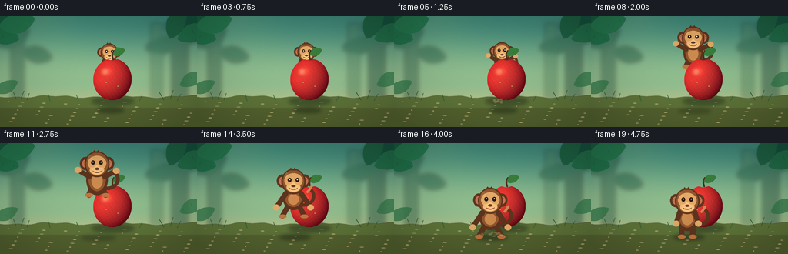
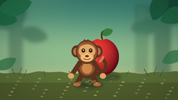
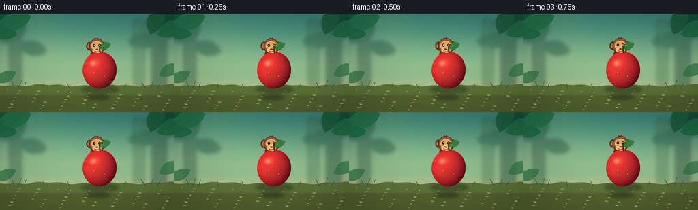
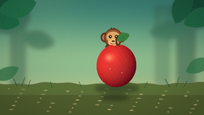
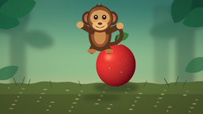
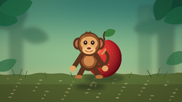

CODING AGENTS AS PIXEL WORLD MODELS
traex/DeepSeek-V4.1-Flash · dynamic_spatial_relationship_0054
点击播放 · 原生 RGB 像素
逐轮保存的候选
回放视频、检查图与代码变化。
每份候选均可单独播放。实际图片检查记录在下方工具轨迹中。
候选 01播放与检查图
点击播放 · 原生 RGB 像素

展开代码变化
--- 上一保存版本
+++ 本次保存版本
@@ -0,0 +1,638 @@
+from __future__ import annotations
+
+import math
+from pathlib import Path
+
+import numpy as np
+from PIL import Image, ImageDraw, ImageFilter
+
+import artifact_io
+
+
+CASE_DIR = Path(__file__).resolve().parent
+W, H, N, FPS = 256, 144, 20, 4.0
+S = 4
+CW, CH = W * S, H * S
+
+
+def sc(value: float) -> int:
+ return int(round(value * S))
+
+
+def p(point: tuple[float, float]) -> tuple[int, int]:
+ return sc(point[0]), sc(point[1])
+
+
+def smoothstep(t: float) -> float:
+ t = max(0.0, min(1.0, t))
+ return t * t * (3.0 - 2.0 * t)
+
+
+def interpolate_frames(keyframes: list[tuple[int, float]], frame: int) -> float:
+ if frame <= keyframes[0][0]:
+ return keyframes[0][1]
+ for (f0, v0), (f1, v1) in zip(keyframes[:-1], keyframes[1:]):
+ if frame <= f1:
+ u = (frame - f0) / (f1 - f0)
+ return v0 + (v1 - v0) * smoothstep(u)
+ return keyframes[-1][1]
+
+
+def rgba(color: tuple[int, int, int, int]) -> tuple[int, int, int, int]:
+ return color
+
+
+def capsule(
+ draw: ImageDraw.ImageDraw,
+ start: tuple[float, float],
+ end: tuple[float, float],
+ width: float,
+ fill: tuple[int, int, int, int],
+) -> None:
+ a, b = p(start), p(end)
+ w = max(1, sc(width))
+ draw.line((a, b), fill=fill, width=w)
+ r = width / 2
+ draw.ellipse((a[0] - sc(r), a[1] - sc(r), a[0] + sc(r), a[1] + sc(r)), fill=fill)
+ draw.ellipse((b[0] - sc(r), b[1] - sc(r), b[0] + sc(r), b[1] + sc(r)), fill=fill)
+
+
+def bezier(points: list[tuple[float, float]], steps: int = 24) -> list[tuple[float, float]]:
+ out = []
+ for i in range(steps + 1):
+ t = i / steps
+ u = 1.0 - t
+ if len(points) == 3:
+ x = u * u * points[0][0] + 2 * u * t * points[1][0] + t * t * points[2][0]
+ y = u * u * points[0][1] + 2 * u * t * points[1][1] + t * t * points[2][1]
+ else:
+ x = (
+ u**3 * points[0][0]
+ + 3 * u * u * t * points[1][0]
+ + 3 * u * t * t * points[2][0]
+ + t**3 * points[3][0]
+ )
+ y = (
+ u**3 * points[0][1]
+ + 3 * u * u * t * points[1][1]
+ + 3 * u * t * t * points[2][1]
+ + t**3 * points[3][1]
+ )
+ out.append((x, y))
+ return out
+
+
+def polyline(
+ draw: ImageDraw.ImageDraw,
+ points: list[tuple[float, float]],
+ width: float,
+ fill: tuple[int, int, int, int],
+) -> None:
+ pts = [p(q) for q in points]
+ draw.line(pts, fill=fill, width=max(1, sc(width)), joint="curve")
+ for x, y in pts:
+ r = sc(width / 2)
+ draw.ellipse((x - r, y - r, x + r, y + r), fill=fill)
+
+
+def leaf_polygon(
+ cx: float,
+ cy: float,
+ length: float,
+ width: float,
+ angle: float,
+ bend: float = 0.0,
+) -> list[tuple[float, float]]:
+ left, right = [], []
+ for i in range(15):
+ t = i / 14
+ x = -length / 2 + length * t
+ profile = max(0.0, math.sin(math.pi * t)) ** 0.72
+ y = bend * math.sin(math.pi * t)
+ left.append((x, y - width * profile))
+ right.append((x, y + width * profile))
+ local = left + list(reversed(right))
+ ca, sa = math.cos(angle), math.sin(angle)
+ return [(cx + x * ca - y * sa, cy + x * sa + y * ca) for x, y in local]
+
+
+def draw_leaf(
+ draw: ImageDraw.ImageDraw,
+ cx: float,
+ cy: float,
+ length: float,
+ width: float,
+ angle: float,
+ fill: tuple[int, int, int, int],
+ vein: tuple[int, int, int, int],
+ bend: float = 0.0,
+) -> None:
+ pts = leaf_polygon(cx, cy, length, width, angle, bend)
+ draw.polygon([p(q) for q in pts], fill=fill)
+ ca, sa = math.cos(angle), math.sin(angle)
+ for side in (-0.34, 0.0, 0.34):
+ t = side + 0.5
+ if not (0.08 < t < 0.92):
+ continue
+ x = -length / 2 + length * t
+ y = bend * math.sin(math.pi * t)
+ vx = cx + x * ca - y * sa
+ vy = cy + x * sa + y * ca
+ ux = -math.sin(angle) * width * 0.42 * math.sin(math.pi * t)
+ uy = math.cos(angle) * width * 0.42 * math.sin(math.pi * t)
+ draw.line((p((vx, vy)), p((vx + ux, vy + uy))), fill=vein, width=max(1, sc(0.55)))
+
+
+def gradient_background() -> Image.Image:
+ top = np.array([63, 137, 124], dtype=np.float32)
+ middle = np.array([143, 190, 145], dtype=np.float32)
+ low = np.array([236, 210, 145], dtype=np.float32)
+ yy = np.linspace(0.0, 1.0, CH, dtype=np.float32)[:, None]
+ blend = np.where(yy < 0.58, yy / 0.58, (yy - 0.58) / 0.42)
+ arr = np.empty((CH, CW, 3), dtype=np.float32)
+ for y in range(CH):
+ t = float(y / (CH - 1))
+ if t < 0.58:
+ u = smoothstep(t / 0.58)
+ col = top * (1 - u) + middle * u
+ else:
+ u = smoothstep((t - 0.58) / 0.42)
+ col = middle * (1 - u) + low * u
+ arr[y, :, :] = col
+ # A soft diagonal shaft of afternoon light.
+ xg, yg = np.meshgrid(np.linspace(0, 1, CW), np.linspace(0, 1, CH))
+ glow = np.exp(-((xg - 0.18 - 0.15 * yg) / 0.20) ** 2) * np.clip(0.55 - yg, 0, 1)
+ arr += glow[:, :, None] * np.array([32, 26, 8], dtype=np.float32)
+ rng = np.random.default_rng(7)
+ grain = rng.normal(0, 1.35, (CH, CW, 1))
+ arr = np.clip(arr + grain, 0, 255).astype(np.uint8)
+ return Image.fromarray(arr, "RGB").convert("RGBA")
+
+
+def draw_background(canvas: Image.Image) -> None:
+ # Hazy tree trunks establish depth without competing with the actors.
+ haze = Image.new("RGBA", canvas.size, (0, 0, 0, 0))
+ d = ImageDraw.Draw(haze, "RGBA")
+ d.rectangle((sc(14), sc(14), sc(31), sc(113)), fill=(50, 93, 73, 105))
+ d.rectangle((sc(223), sc(0), sc(244), sc(111)), fill=(46, 88, 70, 120))
+ d.rectangle((sc(196), sc(9), sc(211), sc(108)), fill=(62, 107, 76, 75))
+ for cx, cy, ln, wd, ang in [
+ (18, 27, 44, 13, -0.55),
+ (235, 21, 48, 14, 0.48),
+ (210, 38, 42, 11, -0.18),
+ (48, 50, 40, 10, 0.22),
+ ]:
+ draw_leaf(d, cx, cy, ln, wd, ang, (31, 88, 65, 115), (18, 62, 52, 80))
+ haze = haze.filter(ImageFilter.GaussianBlur(sc(3.1)))
+ canvas.alpha_composite(haze)
+
+ # Near foliage frame with sharper silhouettes.
+ fg = Image.new("RGBA", canvas.size, (0, 0, 0, 0))
+ d = ImageDraw.Draw(fg, "RGBA")
+ leaves = [
+ (-2, 5, 53, 15, 0.60, (25, 92, 67, 255)),
+ (5, 23, 42, 12, 0.35, (30, 112, 74, 245)),
+ (22, 8, 48, 13, -0.22, (34, 119, 78, 240)),
+ (259, 2, 57, 16, 2.50, (22, 83, 63, 255)),
+ (252, 23, 45, 12, 2.83, (31, 108, 72, 245)),
+ (230, 9, 45, 12, 2.02, (27, 96, 66, 240)),
+ (7, 91, 35, 8, -0.38, (46, 119, 72, 185)),
+ (250, 83, 36, 9, 2.75, (47, 120, 73, 185)),
+ ]
+ for cx, cy, ln, wd, ang, fill in leaves:
+ draw_leaf(d, cx, cy, ln, wd, ang, fill, (17, 64, 49, 150), bend=1.6)
+ canvas.alpha_composite(fg)
+
+ # Ground plane, with a gently uneven horizon.
+ ground = Image.new("RGBA", canvas.size, (0, 0, 0, 0))
+ d = ImageDraw.Draw(ground, "RGBA")
+ horizon = []
+ for x in range(0, W + 2, 2):
+ y = 104.5 + 1.2 * math.sin(x * 0.07) + 0.8 * math.sin(x * 0.19 + 0.6)
+ horizon.append(p((x, y)))
+ horizon += [p((W, H)), p((0, H))]
+ d.polygon(horizon, fill=(93, 116, 58, 255))
+ d.rectangle((0, sc(119), CW, CH), fill=(83, 99, 48, 255))
+ for i in range(48):
+ x = (i * 37 + 11) % W
+ y = 111 + (i * 17) % 31
+ rx = 1.1 + (i % 4) * 0.55
+ col = (61, 83, 42, 90) if i % 2 else (125, 128, 63, 80)
+ d.ellipse((sc(x - rx), sc(y - 0.55), sc(x + rx), sc(y + 0.55)), fill=col)
+ ground = ground.filter(ImageFilter.GaussianBlur(sc(0.28)))
+ canvas.alpha_composite(ground)
+
+ # Small grass blades break the ground silhouette.
+ grass = Image.new("RGBA", canvas.size, (0, 0, 0, 0))
+ d = ImageDraw.Draw(grass, "RGBA")
+ blades = [
+ (21, 108, 17, 98), (27, 108, 31, 97), (35, 109, 38, 100),
+ (213, 109, 207, 99), (221, 108, 225, 96), (230, 110, 235, 101),
+ (65, 110, 63, 102), (181, 110, 185, 102), (102, 109, 99, 102),
+ ]
+ for x0, y0, x1, y1 in blades:
+ d.line((p((x0, y0)), p((x1, y1))), fill=(37, 91, 48, 230), width=sc(0.85))
+ canvas.alpha_composite(grass)
+
+
+def draw_apple_shadow(canvas: Image.Image) -> None:
+ shadow = Image.new("RGBA", canvas.size, (0, 0, 0, 0))
+ d = ImageDraw.Draw(shadow, "RGBA")
+ d.ellipse((sc(119), sc(105), sc(174), sc(116)), fill=(31, 43, 28, 115))
+ shadow = shadow.filter(ImageFilter.GaussianBlur(sc(2.5)))
+ canvas.alpha_composite(shadow)
+
+
+def apple_layer(center: tuple[float, float]) -> Image.Image:
+ cx, cy = center
+ rx, ry = 25.0, 27.0
+ x0, y0 = sc(cx - rx - 4), sc(cy - ry - 13)
+ x1, y1 = sc(cx + rx + 4), sc(cy + ry + 5)
+ lw, lh = x1 - x0, y1 - y0
+ yy, xx = np.mgrid[0:lh, 0:lw]
+ nx = (xx + x0 - sc(cx)) / sc(rx)
+ ny = (yy + y0 - sc(cy)) / sc(ry)
+ top_notch = 0.085 * np.exp(-((nx / 0.26) ** 2))
+ inside = (nx * nx + (ny + 0.015 * nx) ** 2 <= 1.0) & (ny >= -1.0 + top_notch)
+ # Slightly broaden the shoulders of the apple.
+ inside &= (ny > -0.85) | (abs(nx) < 0.72)
+
+ radial = np.clip(1.0 - (nx * nx + ny * ny), 0, 1)
+ diffuse = np.clip(0.55 - 0.40 * nx - 0.30 * ny + 0.32 * np.sqrt(radial), 0.18, 1.05)
+ base = np.array([202, 40, 45], dtype=np.float32)
+ deep = np.array([112, 20, 35], dtype=np.float32)
+ warm = np.array([245, 90, 57], dtype=np.float32)
+ color = deep + (base - deep) * diffuse[:, :, None]
+ color = color * 0.76 + warm * (diffuse[:, :, None] * 0.32)
+
+ shine = np.exp(-(((nx + 0.34) / 0.22) ** 2 + ((ny + 0.38) / 0.16) ** 2))
+ color += shine[:, :, None] * np.array([88, 57, 32], dtype=np.float32)
+ rim = np.clip(1.0 - radial, 0, 1) ** 1.4
+ color -= rim[:, :, None] * np.array([23, 18, 12], dtype=np.float32)
+ # Tiny natural color break-up.
+ noise = np.sin(nx * 24 + ny * 9) * np.sin(ny * 28 - nx * 4)
+ color += noise[:, :, None] * 2.4
+
+ alpha = np.where(inside, 255, 0).astype(np.uint8)
+ rgba_arr = np.dstack([np.clip(color, 0, 255), alpha]).astype(np.uint8)
+ layer = Image.fromarray(rgba_arr, "RGBA")
+ full = Image.new("RGBA", canvas_size(), (0, 0, 0, 0))
+ full.alpha_composite(layer, (x0, y0))
+
+ d = ImageDraw.Draw(full, "RGBA")
+ # Stem and leaf.
+ stem = bezier([(cx + 1.0, cy - ry + 1), (cx - 1.5, cy - ry - 6), (cx + 2.0, cy - ry - 10)])
+ polyline(d, stem, 2.0, (78, 48, 27, 255))
+ draw_leaf(d, cx + 8.5, cy - ry - 8.2, 17.0, 5.2, -0.44, (57, 127, 62, 255), (35, 84, 44, 210), bend=-0.8)
+ # A restrained specular sweep and a few apple freckles.
+ gloss = Image.new("RGBA", full.size, (0, 0, 0, 0))
+ gd = ImageDraw.Draw(gloss, "RGBA")
+ gd.ellipse((sc(cx - 15), sc(cy - 15), sc(cx - 5), sc(cy - 4)), fill=(255, 213, 171, 65))
+ gloss = gloss.filter(ImageFilter.GaussianBlur(sc(2.3)))
+ full.alpha_composite(gloss)
+ for dx, dy, r in [(-8, 4, 0.55), (7, 9, 0.45), (3, -2, 0.35), (12, -7, 0.35)]:
+ d.ellipse(
+ (sc(cx + dx - r), sc(cy + dy - r), sc(cx + dx + r), sc(cy + dy + r)),
+ fill=(255, 181, 100, 105),
+ )
+ return full
+
+
+def canvas_size() -> tuple[int, int]:
+ return CW, CH
+
+
+def draw_monkey(
+ canvas: Image.Image,
+ head: tuple[float, float],
+ scale: float,
+ pose: str,
+ frame: int,
+) -> None:
+ hx, hy = head
+
+ def q(x: float, y: float) -> tuple[float, float]:
+ return hx + x * scale, hy + y * scale
+
+ layer = Image.new("RGBA", canvas.size, (0, 0, 0, 0))
+ d = ImageDraw.Draw(layer, "RGBA")
+
+ fur_dark = (92, 53, 31, 255)
+ fur = (145, 86, 45, 255)
+ fur_light = (188, 117, 64, 255)
+ face = (224, 170, 105, 255)
+ face_light = (244, 195, 128, 255)
+ inner_ear = (194, 116, 83, 255)
+ ink = (48, 29, 21, 255)
+
+ stretch = 1.0
+ body_y = 20.0
+ if pose == "crouch":
+ stretch = 0.83
+ body_y = 21.0
+ elif pose == "air":
+ stretch = 1.12
+ body_y = 19.0
+ elif pose == "land":
+ stretch = 0.88
+ body_y = 21.0
+
+ # Curling tail sits behind the body.
+ if pose in ("air", "land", "front"):
+ tail = bezier([q(10, 30), q(28, 31), q(29, 15), q(22, 10)])
+ polyline(d, tail, 4.1 * scale, fur_dark)
+ polyline(d, bezier([q(18, 13), q(22, 9), q(22, 7)]), 3.0 * scale, (205, 136, 82, 255))
+ else:
+ tail = bezier([q(9, 31), q(25, 35), q(28, 25), q(24, 21)])
+ polyline(d, tail, 4.0 * scale, fur_dark)
+
+ # Legs and feet.
+ if pose == "air":
+ leg_l_end, leg_r_end = q(-10, 38), q(11, 38)
+ elif pose == "land":
+ leg_l_end, leg_r_end = q(-14, 44), q(14, 44)
+ elif pose == "crouch":
+ leg_l_end, leg_r_end = q(-11, 42), q(11, 42)
+ else:
+ leg_l_end, leg_r_end = q(-7, 44), q(7, 44)
+ capsule(d, q(-7, 31), leg_l_end, 7.0 * scale, fur_dark)
+ capsule(d, q(7, 31), leg_r_end, 7.0 * scale, fur_dark)
+ d.ellipse(
+ (sc(leg_l_end[0] - 5 * scale), sc(leg_l_end[1] - 2 * scale),
+ sc(leg_l_end[0] + 5 * scale), sc(leg_l_end[1] + 3 * scale)),
+ fill=fur_light,
+ )
+ d.ellipse(
+ (sc(leg_r_end[0] - 5 * scale), sc(leg_r_end[1] - 2 * scale),
+ sc(leg_r_end[0] + 5 * scale), sc(leg_r_end[1] + 3 * scale)),
+ fill=fur_light,
+ )
+
+ # Torso with a lighter belly.
+ body_box = (
+ sc(hx - 13.5 * scale), sc(hy + (body_y - 17.5 * stretch) * scale),
+ sc(hx + 13.5 * scale), sc(hy + (body_y + 17.5 * stretch) * scale),
+ )
+ d.ellipse(body_box, fill=fur_dark)
+ d.ellipse(
+ (
+ sc(hx - 10.8 * scale), sc(hy + (body_y - 14.0 * stretch) * scale),
+ sc(hx + 10.8 * scale), sc(hy + (body_y + 13.0 * stretch) * scale),
+ ),
+ fill=fur,
+ )
+ d.ellipse(
+ (
+ sc(hx - 7.0 * scale), sc(hy + (body_y - 6.5 * stretch) * scale),
+ sc(hx + 7.0 * scale), sc(hy + (body_y + 10.0 * stretch) * scale),
+ ),
+ fill=(204, 139, 79, 245),
+ )
+
+ # Arms.
+ if pose == "air":
+ hands = [q(-24, 7), q(24, 8)]
+ elif pose == "land":
+ hands = [q(-22, 33), q(22, 33)]
+ elif pose == "crouch":
+ hands = [q(-14, 28), q(14, 28)]
+ elif pose == "front":
+ hands = [q(-14, 28), q(14, 28)]
+ else:
+ hands = [q(-13, 26), q(13, 26)]
+ capsule(d, q(-10, 15), hands[0], 6.6 * scale, fur_dark)
+ capsule(d, q(10, 15), hands[1], 6.6 * scale, fur_dark)
+ for h in hands:
+ d.ellipse(
+ (sc(h[0] - 4.2 * scale), sc(h[1] - 3.8 * scale),
+ sc(h[0] + 4.2 * scale), sc(h[1] + 3.8 * scale)),
+ fill=face,
+ )
+
+ # Ears, head and face.
+ for ex, tilt in [(-14.5, -0.10), (14.5, 0.10)]:
+ ec = q(ex, -1.0)
+ erx, ery = 7.0 * scale, 8.3 * scale
+ d.ellipse(
+ (sc(ec[0] - erx), sc(ec[1] - ery), sc(ec[0] + erx), sc(ec[1] + ery)),
+ fill=fur_dark,
+ )
+ d.ellipse(
+ (sc(ec[0] - 4.2 * scale), sc(ec[1] - 5.1 * scale),
+ sc(ec[0] + 4.2 * scale), sc(ec[1] + 5.1 * scale)),
+ fill=inner_ear,
+ )
+ d.arc(
+ (sc(ec[0] - 3.0 * scale), sc(ec[1] - 3.4 * scale),
+ sc(ec[0] + 3.0 * scale), sc(ec[1] + 3.2 * scale)),
+ start=210 + tilt * 100, end=330 + tilt * 100,
+ fill=(142, 73, 62, 180), width=sc(0.65),
+ )
+
+ head_box = (
+ sc(hx - 15.5 * scale), sc(hy - 16.5 * scale),
+ sc(hx + 15.5 * scale), sc(hy + 16.0 * scale),
+ )
+ d.ellipse(head_box, fill=fur_dark)
+ d.ellipse(
+ (sc(hx - 13.7 * scale), sc(hy - 15.0 * scale),
+ sc(hx + 13.7 * scale), sc(hy + 14.2 * scale)),
+ fill=fur,
+ )
+ # Brow tuft.
+ d.polygon(
+ [p(q(-5.8, -14.6)), p(q(-3.4, -18.0)), p(q(-1.0, -14.8)),
+ p(q(1.4, -18.1)), p(q(4.2, -14.5))],
+ fill=fur_dark,
+ )
+
+ # Heart-shaped tan face mask.
+ d.ellipse(
+ (sc(hx - 11.6 * scale), sc(hy - 10.8 * scale),
+ sc(hx + 11.6 * scale), sc(hy + 8.0 * scale)),
+ fill=face,
+ )
+ d.ellipse(
+ (sc(hx - 9.0 * scale), sc(hy + 1.0 * scale),
+ sc(hx + 9.0 * scale), sc(hy + 13.0 * scale)),
+ fill=face_light,
+ )
+ d.ellipse(
+ (sc(hx - 10.6 * scale), sc(hy - 6.8 * scale),
+ sc(hx - 0.8 * scale), sc(hy + 3.8 * scale)),
+ fill=face,
+ )
+ d.ellipse(
+ (sc(hx + 0.8 * scale), sc(hy - 6.8 * scale),
+ sc(hx + 10.6 * scale), sc(hy + 3.8 * scale)),
+ fill=face,
+ )
+
+ # Eyes with tiny warm catchlights.
+ blink = pose in ("crouch",) and frame == 4
+ for ex in (-5.0, 5.0):
+ eye_y = -2.2
+ if blink:
+ d.arc(
+ (sc(hx + (ex - 2.5) * scale), sc(hy + (eye_y - 1.0) * scale),
+ sc(hx + (ex + 2.5) * scale), sc(hy + (eye_y + 1.8) * scale)),
+ start=15, end=165, fill=ink, width=sc(0.8),
+ )
+ else:
+ d.ellipse(
+ (sc(hx + (ex - 2.4) * scale), sc(hy + (eye_y - 2.8) * scale),
+ sc(hx + (ex + 2.4) * scale), sc(hy + (eye_y + 2.6) * scale)),
+ fill=ink,
+ )
+ d.ellipse(
+ (sc(hx + (ex - 0.7) * scale), sc(hy + (eye_y - 1.5) * scale),
+ sc(hx + (ex + 0.8) * scale), sc(hy + (eye_y + 0.1) * scale)),
+ fill=(255, 247, 220, 240),
+ )
+
+ # Nose and expressive smile.
+ nose_y = 5.2
+ d.ellipse(
+ (sc(hx - 2.7 * scale), sc(hy + (nose_y - 1.1) * scale),
+ sc(hx + 2.7 * scale), sc(hy + (nose_y + 1.7) * scale)),
+ fill=(101, 55, 41, 255),
+ )
+ d.arc(
+ (sc(hx - 5.5 * scale), sc(hy + 4.5 * scale),
+ sc(hx + 5.5 * scale), sc(hy + 10.5 * scale)),
+ start=12, end=168, fill=(103, 49, 38, 255), width=sc(0.85),
+ )
+ d.arc(
+ (sc(hx - 3.5 * scale), sc(hy + 6.0 * scale),
+ sc(hx + 3.5 * scale), sc(hy + 10.2 * scale)),
+ start=20, end=160, fill=(182, 83, 72, 150), width=sc(0.55),
+ )
+
+ # Soft left-side fur highlight and a little cheek blush.
+ highlight = Image.new("RGBA", canvas.size, (0, 0, 0, 0))
+ hd = ImageDraw.Draw(highlight, "RGBA")
+ hd.ellipse(
+ (sc(hx - 12.5 * scale), sc(hy - 13.0 * scale),
+ sc(hx - 4.0 * scale), sc(hy - 3.0 * scale)),
+ fill=(255, 211, 141, 32),
+ )
+ hd.ellipse(
+ (sc(hx - 10.8 * scale), sc(hy + 5.0 * scale),
+ sc(hx - 6.8 * scale), sc(hy + 7.2 * scale)),
+ fill=(218, 85, 74, 45),
+ )
+ hd.ellipse(
+ (sc(hx + 6.8 * scale), sc(hy + 5.0 * scale),
+ sc(hx + 10.8 * scale), sc(hy + 7.2 * scale)),
+ fill=(218, 85, 74, 45),
+ )
+ highlight = highlight.filter(ImageFilter.GaussianBlur(sc(0.9)))
+ layer.alpha_composite(highlight)
+ canvas.alpha_composite(layer)
+
+
+def draw_monkey_shadow(canvas: Image.Image, x: float, height: float, scale: float) -> None:
+ # The shadow tightens under the monkey as it comes down.
+ lift = max(0.0, 47.0 - height)
+ rx = 10.0 + scale * 10.0 + lift * 0.10
+ ry = 2.0 + scale * 1.6 - lift * 0.015
+ alpha = int(max(35, 130 - lift * 2.2))
+ shadow = Image.new("RGBA", canvas.size, (0, 0, 0, 0))
+ d = ImageDraw.Draw(shadow, "RGBA")
+ cy = 122.0 + lift * 0.05
+ d.ellipse((sc(x - rx), sc(cy - ry), sc(x + rx), sc(cy + ry)), fill=(30, 42, 26, alpha))
+ shadow = shadow.filter(ImageFilter.GaussianBlur(sc(2.4)))
+ canvas.alpha_composite(shadow)
+
+
+def draw_dust(canvas: Image.Image, frame: int) -> None:
+ if frame not in (5, 6, 15, 16, 17):
+ return
+ rng = np.random.default_rng(31 + frame)
+ layer = Image.new("RGBA", canvas.size, (0, 0, 0, 0))
+ d = ImageDraw.Draw(layer, "RGBA")
+ if frame in (5, 6):
+ center_x, center_y = 138.0, 113.0
+ fade = 1.0 if frame == 5 else 0.45
+ else:
+ center_x, center_y = 125.0, 121.0
+ fade = {15: 0.65, 16: 1.0, 17: 0.45}[frame]
+ for _ in range(12):
+ ang = rng.uniform(-math.pi, 0.1)
+ dist = rng.uniform(3.0, 15.0)
+ x = center_x + math.cos(ang) * dist
+ y = center_y + math.sin(ang) * dist * 0.42
+ r = rng.uniform(0.9, 2.4)
+ d.ellipse(
+ (sc(x - r), sc(y - r), sc(x + r), sc(y + r)),
+ fill=(221, 190, 125, int(90 * fade)),
+ )
+ layer = layer.filter(ImageFilter.GaussianBlur(sc(0.7)))
+ canvas.alpha_composite(layer)
+
+
+def make_frame(frame: int, apple: Image.Image) -> Image.Image:
+ canvas = gradient_background()
+ draw_background(canvas)
+ draw_apple_shadow(canvas)
+
+ x = interpolate_frames(
+ [(0, 142.0), (3, 142.0), (4, 142.0), (7, 135.0), (10, 126.0), (16, 125.0), (19, 125.0)],
+ frame,
+ )
+ y = interpolate_frames(
+ [(0, 47.5), (3, 47.0), (4, 52.0), (6, 40.0), (9, 25.0), (10, 24.0),
+ (12, 31.0), (14, 50.0), (16, 75.0), (19, 75.5)],
+ frame,
+ )
+ scale = interpolate_frames(
+ [(0, 0.73), (3, 0.74), (4, 0.68), (7, 0.91), (10, 1.05),
+ (13, 1.00), (16, 1.04), (19, 1.03)],
+ frame,
+ )
+
+ if frame <= 3:
+ pose = "idle"
+ elif frame == 4:
+ pose = "crouch"
+ elif frame <= 12:
+ pose = "air"
+ elif frame <= 15:
+ pose = "land"
+ elif frame == 16:
+ pose = "land"
+ else:
+ pose = "front"
+
+ draw_monkey_shadow(canvas, x + 2.0, y, scale)
+ if frame < 10:
+ draw_monkey(canvas, (x, y), scale, pose, frame)
+ canvas.alpha_composite(apple)
+ else:
+ canvas.alpha_composite(apple)
+ draw_monkey(canvas, (x, y), scale, pose, frame)
+ draw_dust(canvas, frame)
+
+ # Gentle vignette and a final warm grade.
+ arr = np.asarray(canvas.convert("RGB"), dtype=np.float32)
+ yy, xx = np.mgrid[0:CH, 0:CW]
+ nx = (xx / (CW - 1) - 0.5) * 2.0
+ ny = (yy / (CH - 1) - 0.5) * 2.0
+ vignette = np.clip(1.0 - 0.12 * (nx * nx + ny * ny), 0.80, 1.0)
+ arr = arr * vignette[:, :, None]
+ arr[:, :, 0] *= 1.018
+ arr[:, :, 2] *= 0.985
+ arr = np.clip(arr, 0, 255).astype(np.uint8)
+ frame_img = Image.fromarray(arr, "RGB").resize((W, H), Image.Resampling.LANCZOS)
+ return frame_img
+
+
+def main() -> None:
+ apple = apple_layer((146.0, 82.0))
+ frames = np.stack([np.asarray(make_frame(i, apple), dtype=np.uint8) for i in range(N)])
+ artifact_io.save(frames, CASE_DIR)
+ print(f"Saved {N} frames at {W}x{H}, {FPS:g} fps to {CASE_DIR}")
+
+
+if __name__ == "__main__":
+ main()
候选 02播放与检查图
点击播放 · 原生 RGB 像素

展开代码变化
--- 上一保存版本
+++ 本次保存版本
@@ -3,6 +3,7 @@
import math
from pathlib import Path
+import cv2
import numpy as np
from PIL import Image, ImageDraw, ImageFilter
@@ -631,6 +632,17 @@
apple = apple_layer((146.0, 82.0))
frames = np.stack([np.asarray(make_frame(i, apple), dtype=np.uint8) for i in range(N)])
artifact_io.save(frames, CASE_DIR)
+ writer = cv2.VideoWriter(
+ str(CASE_DIR / "video.mp4"),
+ cv2.VideoWriter_fourcc(*"mp4v"),
+ FPS,
+ (W, H),
+ )
+ if not writer.isOpened():
+ raise RuntimeError("Could not create video.mp4")
+ for frame in frames:
+ writer.write(cv2.cvtColor(frame, cv2.COLOR_RGB2BGR))
+ writer.release()
print(f"Saved {N} frames at {W}x{H}, {FPS:g} fps to {CASE_DIR}")
可观测工具轨迹
实际执行的命令与返回图片。
命令 1exit 0
/bin/bash -c "pwd && rg --files -g 'prompt.txt' -g 'GENERATION_RULES.md' -g 'task_spec.json' -g '"'!node_modules'"'"
命令 2exit 0
/bin/bash -c "find . -maxdepth 2 -type f -printf '%p\\n' | sort | head -200"
命令 3exit 0
/bin/bash -c 'cat prompt.txt'
命令 4exit 0
/bin/bash -c 'cat GENERATION_RULES.md'
命令 5exit 0
/bin/bash -c 'cat task_spec.json'
命令 6exit 0
/bin/bash -c "sed -n '1,240p' artifact_io.py"
命令 7exit 0
/bin/bash -c "python - <<'PY' import importlib.util for m in ['numpy','PIL','cv2','imageio','matplotlib','scipy']: print(m, bool(importlib.util.find_spec(m))) PY"
命令 8exit 0
/bin/bash -c 'which ffmpeg || true; which ffprobe || true'
命令 9exit 0
/bin/bash -c 'python generate.py'
命令 10exit 0
/bin/bash -c "python - <<'PY'
import numpy as np
from pathlib import Path
p=np.load('pixels.npz')['pixels']
print('pixels',p.shape,p.dtype)
print('frames',len(list(Path('frames').glob('*.png'))))
print('index.html',Path('index.html').stat().st_size)
PY"命令 11exit 0
/bin/bash -c "python - <<'PY'
from PIL import Image
import numpy as np
from pathlib import Path
# Verify all frames are RGB, correctly sized, and differ through the sequence.
files=sorted(Path('frames').glob('*.png'))
frames=[np.asarray(Image.open(f).convert('RGB')) for f in files]
print('shape', frames[0].shape, 'frames', len(frames))
print('nonblank min/max', min(int(x.min()) for x in frames), max(int(x.max()) for x in frames))
print('mean abs deltas', [round(float(np.abs(frames[i].astype(int)-frames[i-1].astype(int)).mean()),2) for i in range(1,len(frames))])
PY"命令 12exit 0
/bin/bash -c "python generate.py && python - <<'PY'
from pathlib import Path
import cv2
cap=cv2.VideoCapture('video.mp4')
print('mp4', Path('video.mp4').stat().st_size, 'bytes')
print('decoded frames', int(cap.get(cv2.CAP_PROP_FRAME_COUNT)), 'fps', cap.get(cv2.CAP_PROP_FPS), 'size', int(cap.get(cv2.CAP_PROP_FRAME_WIDTH)), int(cap.get(cv2.CAP_PROP_FRAME_HEIGHT)))
ok, frame=cap.read()
print('first frame', ok, None if frame is None else frame.shape)
cap.release()
PY"视觉工具实际返回图片 1

视觉工具实际返回图片 2

视觉工具实际返回图片 3

视觉工具实际返回图片 4

视觉工具实际返回图片 5

视觉工具实际返回图片 6

保存候选 2 份；完成命令 12 次；可验证图片返回 6 张。原始 API 响应与完整日志保留在本地。